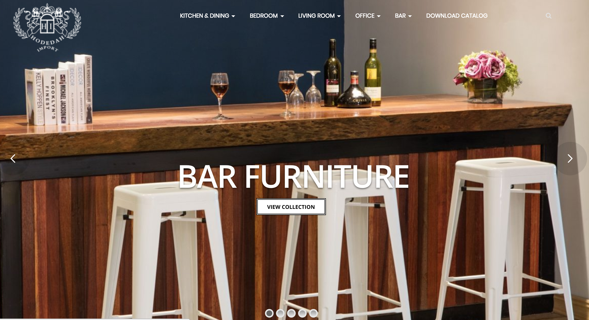

Cruzpaints inc
Foreveramore Bridal

Post Jobs

CarInformer

Project:World of Distructions

Hi, my name is John Espinoza. I'm a Creative Technologist and Software Developer envisioning and producing the future of technology interface. I'm interested in a position where I can use my Software Development skills to make an impact that I can see with my own eyes. Of course, the position is only part of the equation. Being at a company where I can grow and work toward something I care about. I’m an enthusiastic knowledge-hungry learner, eager to meet challenges and quickly assimilate new concepts. A highly analytical thinker with a demonstrated talent for identifying, scrutinizing, improving, and streamlining complex work processes. I'm not afraid of failure. It is an essential part of the process that brings you to success. I believe that my focus, determination, perseverance and attention to detail combined with my extensive knowledge of Software Development and my ability to quickly pick up new technologies makes me an exceptional choice for the Software Development Engineer position.
React.js
Node.js
HTML5
CSS
Jquery